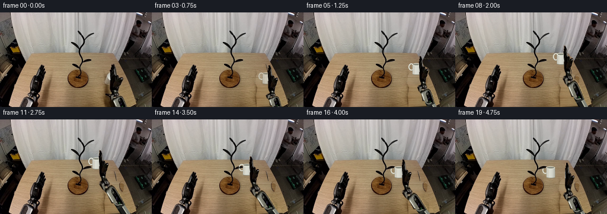
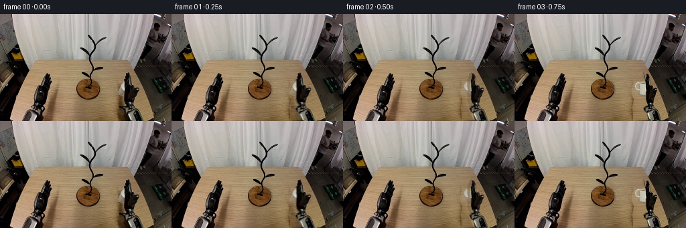

CODING AGENTS AS PIXEL WORLD MODELS
traex/GPT-6.1-Sol · common50_0032
点击播放 · 原生 RGB 像素
逐轮保存的候选
回放视频、检查图与代码变化。
每份候选均可单独播放。实际图片检查记录在下方工具轨迹中。
候选 01播放与检查图
点击播放 · 原生 RGB 像素


展开代码变化
--- 上一保存版本
+++ 本次保存版本
@@ -0,0 +1,195 @@
+from pathlib import Path
+import numpy as np
+from PIL import Image, ImageDraw, ImageFilter
+import artifact_io
+
+ROOT=Path(__file__).resolve().parent
+SRC=np.array(Image.open(ROOT/'first_frame.png').convert('RGB'))
+H,W=SRC.shape[:2]
+S=4
+
+def polygon_mask(points):
+ a=Image.new('L',(W*S,H*S)); ImageDraw.Draw(a).polygon([(int(x*S),int(y*S)) for x,y in points],fill=255)
+ return np.array(a.resize((W,H),Image.Resampling.LANCZOS))/255.
+
+# Masks are analytic outlines of the moving hardware and cup, derived locally.
+toolpoly=[(188,87),(191,88),(194,94),(195,105),(202,107),(208,110),(209,114),(206,119),(203,126),(200,131),(200,136),(192,137),(187,132),(185,126),(185,105),(186,96)]
+forepoly=[(191,132),(198,133),(200,138),(207,141),(212,147),(217,160),(194,161),(191,150),(186,146),(184,142),(185,139),(190,137)]
+toolmask=polygon_mask(toolpoly)
+foremask=polygon_mask(forepoly)
+# The frame's cup handle is ceramic, distinct from the black finger beside it.
+yy,xx=np.mgrid[:H,:W]
+a=SRC.astype(float)
+handmask=((xx>=179)&(xx<=186)&(yy>=101)&(yy<=115)&(a.mean(2)>145)&((a.max(2)-a.min(2))<44)).astype(float)
+handmask=np.maximum(handmask,polygon_mask([(184,102),(186,102),(186,114),(184,115),(181,111),(180,108),(181,105)]))
+# Remove the original object and its contact shadows; keep the rest of the table exact.
+erasepoly=[(187,86),(192,87),(196,104),(203,106),(209,110),(208,120),(204,128),(202,133),(210,140),(217,149),(221,160),(177,160),(176,140),(178,127),(175,120),(175,114),(176,106),(179,102),(183,100),(185,96)]
+erase=polygon_mask(erasepoly)
+# Rowwise completion of the wooden surface, reusing actual horizontal grain.
+background=SRC.copy().astype(float)
+for y in range(85,H):
+ ids=np.flatnonzero(erase[y]>.1)
+ if not len(ids): continue
+ lo,hi=ids[0],ids[-1]
+ left=SRC[y,max(150,lo-8):lo-3].astype(float)
+ # At the lower edge the right side of the table becomes visible dark siding.
+ edge=201+(y-86)*.39
+ rightx=min(255,int(edge)-3)
+ if rightx>hi+3:
+ right=SRC[y,hi+2:min(rightx,hi+7)].astype(float)
+ rcol=np.median(right,axis=0) if len(right) else np.median(left,axis=0)
+ else:
+ # Match the spatial falloff of the neighboring wood, not the dark siding.
+ rcol=np.median(left,axis=0)-np.array([7,7,5])
+ lcol=np.median(left,axis=0)
+ tex=SRC[y,88:124].astype(float)
+ grain=tex-np.mean(tex,axis=0)
+ for x in ids:
+ u=np.clip((x-lo)/max(hi-lo,1),0,1)
+ color=lcol*(1-u)+rcol*u+grain[(x-lo)%len(grain)]*.55
+ background[y,x]=color*erase[y,x]+SRC[y,x]*(1-erase[y,x])
+background=np.uint8(np.clip(background,0,255))
+Image.fromarray(background).save(ROOT/'background.png')
+
+# Affine texture mapping of one rigid hardware component. The longitudinal
+# scale is its orthographic 3-D projection, not a change in link length.
+def warp_sprite(mask,src_origin,dst_origin,src_vec,dst_vec,width_scale=1.0):
+ sv=np.array(src_vec,float);dv=np.array(dst_vec,float)
+ su=sv/np.linalg.norm(sv);du=dv/np.linalg.norm(dv)
+ sn=np.array([su[1],-su[0]]);dn=np.array([du[1],-du[0]])
+ M=np.outer(du,su)*np.linalg.norm(dv)/np.linalg.norm(sv)+np.outer(dn,sn)*width_scale
+ inv=np.linalg.inv(M); off=np.array(src_origin)-inv@np.array(dst_origin)
+ params=tuple([inv[0,0],inv[0,1],off[0],inv[1,0],inv[1,1],off[1]])
+ rgba=np.dstack([SRC,np.uint8(np.clip(mask*255,0,255))])
+ return Image.fromarray(rgba).transform((W,H),Image.Transform.AFFINE,params,Image.Resampling.BICUBIC)
+
+B=np.array([237.,199.,0.]); E0=np.array([204.,158.,52.]); W0=np.array([195.,133.,10.])
+L1=np.linalg.norm(E0-B);L2=np.linalg.norm(W0-E0)
+e0=(W0-B)/np.linalg.norm(W0-B)
+bend=E0-B-np.dot(E0-B,e0)*e0
+bend/=np.linalg.norm(bend)
+def elbow(wrist):
+ v=wrist-B;d=np.linalg.norm(v);e=v/d
+ n=bend-np.dot(bend,e)*e;n/=np.linalg.norm(n)
+ along=(L1*L1-L2*L2+d*d)/(2*d)
+ h=np.sqrt(max(0,L1*L1-along*along))
+ return B+along*e+h*n
+
+# Consistent projected cylindrical upper link, behind the original textured forearm.
+def upper_link(img,e):
+ layer=Image.new('RGBA',(W*S,H*S));d=ImageDraw.Draw(layer)
+ p=np.array(e[:2]);q=B[:2];v=q-p;v/=np.linalg.norm(v);n=np.array([v[1],-v[0]])
+ def poly(coords,col):d.polygon([(round(x*S),round(y*S)) for x,y in coords],fill=col)
+ poly([p+n*7,p-n*7,q-n*7,q+n*7],(27,28,26,255))
+ poly([p+n*7,p+n*3,q+n*3,q+n*7],(128,130,119,255))
+ poly([p+n*3,p+n*1.5,q+n*1.5,q+n*3],(176,179,163,255))
+ poly([p-n*5,p-n*7,q-n*7,q-n*5],(10,12,11,255))
+ for t in [.13,.78]:
+ c=p+(q-p)*t
+ poly([c+n*7-v*1.6,c-n*7-v*1.6,c-n*7+v*1.6,c+n*7+v*1.6],(41,43,39,255))
+ # Round joint with a restrained metallic rim.
+ x,y=p
+ d.ellipse(((x-6.5)*S,(y-6.5)*S,(x+6.5)*S,(y+6.5)*S),fill=(54,56,50),outline=(112,114,103),width=2*S)
+ d.ellipse(((x-3.7)*S,(y-3.7)*S,(x+3.7)*S,(y+3.7)*S),fill=(24,26,23))
+ img.alpha_composite(layer.resize((W,H),Image.Resampling.LANCZOS))
+
+# Shaded upright ceramic mug. Its unchanging dimensions preserve rigidity.
+def mug_layer(center,reveal):
+ cx,cy=center
+ layer=Image.new('RGBA',(W*S,H*S));d=ImageDraw.Draw(layer)
+ def ellipse(box,color,width=None):
+ b=tuple(float(v*S) for v in box)
+ if width is None:d.ellipse(b,fill=color)
+ else:d.ellipse(b,outline=color,width=int(width*S))
+ hx=cx-9.0;hy=cy-5.0
+ # Extruded oval handle, hole remains transparent.
+ ellipse((hx-5.2,hy-6.3,hx+5.2,hy+6.3),(169,169,156,255),2.0)
+ ellipse((hx-4.6,hy-6.0,hx+4.6,hy+5.5),(219,220,207,255),1.4)
+ ellipse((hx-4.6,hy-5.7,hx+4.4,hy+5.3),(225,226,214,255),.7)
+ # Tapered cylinder, longitudinally shaded across its round section.
+ r=7.4;top=cy-9.1;bottom=cy+8.1
+ for xs in range(int((cx-r)*S),int((cx+r)*S)+1):
+ x=xs/S;u=(x-cx)/r
+ if abs(u)>1:continue
+ shade=(1-u*u)**.5
+ val=151+65*shade+12*(-u)
+ color=(int(val),int(val+1),int(val-9),255)
+ bt=bottom-1.5*u*u
+ d.line((xs,(top+1.6*u*u)*S,xs,bt*S),fill=color,width=1)
+ ellipse((cx-r,top-2.3,cx+r,top+2.3),(226,227,213,255))
+ ellipse((cx-r+1.3,top-1.3,cx+r-1.2,top+1.0),(96,99,89,255))
+ ellipse((cx-r+2.0,top-.6,cx+r-1.9,top+.95),(138,140,127,255))
+ d.arc(((cx-r)*S,(bottom-3.2)*S,(cx+r)*S,(bottom+.2)*S),0,180,fill=(141,144,133,255),width=S)
+ # A slim highlight belongs to the ceramic, not to the table.
+ d.line(((cx-3.9)*S,(top+3)*S,(cx-4.1)*S,(bottom-2)*S),fill=(232,232,222,180),width=S)
+ layer=layer.resize((W,H),Image.Resampling.LANCZOS)
+ # At first the handle texture supplies the exact real image appearance.
+ if reveal<1:
+ ar=np.array(layer).astype(float)
+ ar[:,:,3]*=reveal
+ layer=Image.fromarray(ar.astype(np.uint8))
+ hh=warp_sprite(handmask,(194,113),center,(0,-20),(0,-20))
+ ha=np.array(hh);ha[:,:,3]=np.uint8(ha[:,:,3]*(1-reveal))
+ layer.alpha_composite(Image.fromarray(ha))
+ return layer
+
+def smooth(t):t=np.clip(t,0,1);return t*t*(3-2*t)
+keys=[(0,(194.,113.)),(3,(194.,113.)),(6,(190.,92.)),(9,(175.,76.)),(11,(163.,76.)),(13,(161.,82.)),(15,(161.,91.)),(19,(161.,91.))]
+def cup_position(i):
+ for (t0,p0),(t1,p1) in zip(keys[:-1],keys[1:]):
+ if t0<=i<=t1:
+ t=smooth((i-t0)/(t1-t0));return np.array(p0)*(1-t)+np.array(p1)*t
+ return np.array(keys[-1][1])
+
+frames=[SRC.copy()];kin=[]
+for i in range(1,20):
+ cp=cup_position(i);yaw=smooth((i-.3)/3.7)
+ # Wrist goes around the cup's right wall as the fingers close.
+ offset=np.array([1+11*yaw,20.+1*yaw]);wp=cp+offset
+ release=smooth((i-15.5)/3.5)
+ wp+=np.array([19.,6.])*release
+ wrist=np.r_[wp,10.];e=elbow(wrist)
+ kin.append((np.linalg.norm(e-B),np.linalg.norm(wrist-e)))
+ out=Image.fromarray(background).convert('RGBA')
+ # Soft table shadow moves continuously beneath the raised cup and arm.
+ shadow=Image.new('RGBA',(W*S,H*S));sd=ImageDraw.Draw(shadow)
+ elevation=max(0,113-cp[1]);shx=cp[0]+3;shy=118-0.15*(194-cp[0])
+ opacity=int(50/(1+elevation*.05))
+ sd.ellipse(((shx-12)*S,(shy-3)*S,(shx+10)*S,(shy+4)*S),fill=(28,22,14,opacity))
+ shadow=shadow.filter(ImageFilter.GaussianBlur((2+elevation*.045)*S))
+ out.alpha_composite(shadow.resize((W,H),Image.Resampling.LANCZOS))
+ upper_link(out,e)
+ fore=warp_sprite(foremask,(195,133),wp,(9,25),e[:2]-wp,width_scale=.96)
+ out.alpha_composite(fore)
+ # Mug is behind the fingers while carried, and in front of the stand.
+ out.alpha_composite(mug_layer(cp,smooth((i-1)/3)))
+ # Original gripper housing and fingers remain one rigid textured object.
+ width=1-.29*yaw
+ angle=np.deg2rad(-3*yaw+3*release)
+ v=np.array([np.sin(angle)*43,-np.cos(angle)*43])
+ tool=warp_sprite(toolmask,(195,133),wp,(0,-43),v,width_scale=width)
+ out.alpha_composite(tool)
+ # The peg passes through the handle hole and lies in front of its far side.
+ if i>=13:
+ pegmask=polygon_mask([(146,81),(150,79),(153,79),(154,80),(152,82),(148,83)])
+ pegmask*=smooth((i-12)/3)
+ # Restrict re-occlusion to the peg, leaving the full stand unchanged.
+ peg=Image.fromarray(np.dstack([SRC,np.uint8(pegmask*255)]))
+ out.alpha_composite(peg)
+ fr=np.array(out.convert('RGB'))
+ # Seamless initial hardware continuity; background/pose transition is localized.
+ if i<3:
+ t=smooth(i/3.)
+ region=np.clip(erase+toolmask+foremask,0,1)*(.45+.55*t)
+ # Preserve moving pixels outside the rest silhouette, too.
+ changed=np.max(np.abs(fr.astype(int)-SRC.astype(int)),axis=2)>2
+ region=np.maximum(region,changed.astype(float)*t)
+ fr=np.uint8(np.clip(SRC*(1-region[:,:,None])+fr*region[:,:,None],0,255))
+ frames.append(fr)
+frames=np.array(frames,dtype=np.uint8)
+np.save(ROOT/'candidate.npy',frames)
+np.savetxt(ROOT/'link_lengths.txt',np.array(kin),fmt='%.8f')
+assert frames.shape==(20,160,256,3)
+assert np.array_equal(frames[0],SRC)
+artifact_io.save(frames,ROOT)
+print('Saved',frames.shape,'constant 3-D link lengths',L1,L2)
候选 02播放与检查图
点击播放 · 原生 RGB 像素
展开代码变化
--- 上一保存版本
+++ 本次保存版本
@@ -134,7 +134,7 @@
return layer
def smooth(t):t=np.clip(t,0,1);return t*t*(3-2*t)
-keys=[(0,(194.,113.)),(3,(194.,113.)),(6,(190.,92.)),(9,(175.,76.)),(11,(163.,76.)),(13,(161.,82.)),(15,(161.,91.)),(19,(161.,91.))]
+keys=[(0,(194.,113.)),(3,(194.,113.)),(6,(190.,92.)),(9,(175.,76.)),(11,(163.,76.)),(13,(161.,82.)),(15,(161.,89.)),(19,(161.,89.))]
def cup_position(i):
for (t0,p0),(t1,p1) in zip(keys[:-1],keys[1:]):
if t0<=i<=t1:
@@ -162,7 +162,7 @@
fore=warp_sprite(foremask,(195,133),wp,(9,25),e[:2]-wp,width_scale=.96)
out.alpha_composite(fore)
# Mug is behind the fingers while carried, and in front of the stand.
- out.alpha_composite(mug_layer(cp,smooth((i-1)/3)))
+ out.alpha_composite(mug_layer(cp,smooth(i/2.5)))
# Original gripper housing and fingers remain one rigid textured object.
width=1-.29*yaw
angle=np.deg2rad(-3*yaw+3*release)
可观测工具轨迹
实际执行的命令与返回图片。
命令 1exit 0
/bin/bash -lc 'ls -la; cat prompt.txt; cat GENERATION_RULES.md'
命令 2exit 0
/bin/bash -lc "cat task_spec.json; cat artifact_io.py; python - <<'PY'
from PIL import Image
import numpy as np
im=np.array(Image.open('first_frame.png'))
print('shape',im.shape)
# luminance ascii half scale
im=np.array(Image.open('first_frame.png').resize((128,80)))
g=np.mean(im,axis=2);chars=' .,:;irsXA253hMHGS#9B&@'
for row in g:
print(''.join(chars[int(v)*(len(chars)-1)//256] for v in row))
PY"命令 3exit 0
/bin/bash -lc "python - <<'PY'
from PIL import Image
import numpy as np
im=np.array(Image.open('first_frame.png'))
# 4x2 averages color classes
print(' '+''.join(str(i//10%10) for i in range(0,256,2)))
print(' '+''.join(str(i%10) for i in range(0,256,2)))
for y in range(0,160,2):
s=''
for x in range(0,256,2):
r,g,b=im[y:y+2,x:x+2].mean((0,1)); l=(r+g+b)/3
if l<25:c='@'
elif l<50:c='#'
elif l<80:c='x'
elif r>g*1.2 and r>b*1.45:c='t' if l>105 else 'o'
elif l>205:c='W'
elif l>170:c='w'
elif l>140:c='g'
elif l>105:c='-'
else:c='.'
s+=c
print('%3d '%y+s)
PY"命令 4exit 0
/bin/bash -lc "python - <<'PY'
from PIL import Image
import numpy as np
im=np.array(Image.open('first_frame.png'))
for name,(x0,y0,x1,y1) in {'left':(42,85,82,160),'right':(175,84,220,160),'center':(104,74,154,134),'tree':(112,26,164,100)}.items():
a=im[y0:y1,x0:x1];print('\\n',name,x0,y0)
chars=' .:-=+*#%@'
for j,row in enumerate(a.mean(2)):
print('%3d '%(y0+j)+''.join(chars[min(int(v)*10//256,9)] for v in row))
print('samples')
for y in [80,85,90,95,100,105,110,115,120,125,130,140,150]:
print(y, [(x,tuple(im[y,x])) for x in range(100,212,4)])
PY"命令 5exit 0
/bin/bash -lc "python - <<'PY'
import numpy as np
from PIL import Image
im=np.array(Image.open('first_frame.png'))
for y in range(86,160):
row=im[y,172:217];s=''
for r,g,b in row.astype(float):
l=(r+g+b)/3
if l<16:c=' '
elif l<35:c='.'
elif l<65:c=':'
elif l<95:c='=' if max(r,g,b)-min(r,g,b)<20 else 'o'
elif max(r,g,b)-min(r,g,b)>35:c='t'
elif l<155:c='+'
elif l<190:c='*'
elif l<225:c='W'
else:c='@'
s+=c
print(f'{y:3} {s}')
print(' '+''.join(str(x//10%10) for x in range(172,217)))
print(' '+''.join(str(x%10) for x in range(172,217)))
print('\\nbright neutral pixels components')
a=im.astype(float);mask=(a.mean(2)>160)&(a.max(2)-a.min(2)<30)
# component
from scipy.ndimage import label,find_objects
labs,n=label(mask)
for i,sl in enumerate(find_objects(labs)):
if np.sum(labs[sl]==i+1)>3 and sl[0].start>70:print(i+1,sl, np.sum(labs[sl]==i+1))
PY"命令 6exit 0
/bin/bash -lc "python - <<'PY'
import numpy as np
from PIL import Image
im=np.array(Image.open('first_frame.png'))
# Coded grid on mug region: wood vs gray white vs black.
print(' '+''.join(str(x//10%10) for x in range(168,200)))
print(' '+''.join(str(x%10) for x in range(168,200)))
for y in range(97,127):
s=''
for r,g,b in im[y,168:200].astype(float):
if r-g>16 and g-b>15: c='t' if r>130 else 's'
else:
l=(r+g+b)/3;c=' ' if l<15 else '.' if l<35 else ':' if l<65 else '+' if l<120 else 'g' if l<155 else 'W' if l<200 else '@'
s+=c
print(f'{y:3} {s}')
PY"命令 7exit 0
/bin/bash -lc "python - <<'PY'
from PIL import Image
import numpy as np
im=np.array(Image.open('first_frame.png'))
print(' '+''.join(str(x//10%10) for x in range(172,222)))
print(' '+''.join(str(x%10) for x in range(172,222)))
for y in range(125,160):
s=''
for r,g,b in im[y,172:222].astype(float):
l=(r+g+b)/3
if r-g>16 and g-b>15:c='t' if r>130 else 's'
elif l<14:c=' '
elif l<30:c='.'
elif l<60:c=':'
elif l<105:c='+'
elif l<155:c='g'
elif l<200:c='W'
else:c='@'
s+=c
print(f'{y:3} {s}')
PY"命令 8exit 0
/bin/bash -lc "python - <<'PY'
from PIL import Image
import numpy as np
im=np.array(Image.open('first_frame.png')).astype(int)
for y in range(99,124):
print(y, ' '.join('%3d'%int(im[y,x].mean()) for x in range(174,188)))
print('pairs')
for y in [102,105,108,111,114,117,120]:print(y,[(x,im[y,x].tolist()) for x in range(175,188)])
PY"命令 9exit 0
/bin/bash -lc "cat > generate.py <<'PY'
from pathlib import Path
import numpy as np
from PIL import Image, ImageDraw, ImageFilter
import artifact_io
ROOT=Path(__file__).resolve().parent
SRC=np.array(Image.open(ROOT/'first_frame.png').convert('RGB'))
H,W=SRC.shape[:2]
S=4
def polygon_mask(points):
a=Image.new('L',(W*S,H*S)); ImageDraw.Draw(a).polygon([(int(x*S),int(y*S)) for x,y in points],fill=255)
return np.array(a.resize((W,H),Image.Resampling.LANCZOS))/255.
# Masks are analytic outlines of the moving hardware and cup, derived locally.
toolpoly=[(188,87),(191,88),(194,94),(195,105),(202,107),(208,110),(209,114),(206,119),(203,126),(200,131),(200,136),(192,137),(187,132),(185,126),(185,105),(186,96)]
forepoly=[(191,132),(198,133),(200,138),(207,141),(212,147),(217,160),(194,161),(191,150),(186,146),(184,142),(185,139),(190,137)]
toolmask=polygon_mask(toolpoly)
foremask=polygon_mask(forepoly)
# The frame's cup handle is ceramic, distinct from the black finger beside it.
yy,xx=np.mgrid[:H,:W]
a=SRC.astype(float)
handmask=((xx>=179)&(xx<=186)&(yy>=101)&(yy<=115)&(a.mean(2)>145)&((a.max(2)-a.min(2))<44)).astype(float)
handmask=np.maximum(handmask,polygon_mask([(184,102),(186,102),(186,114),(184,115),(181,111),(180,108),(181,105)]))
# Remove the original object and its contact shadows; keep the rest of the table exact.
erasepoly=[(187,86),(192,87),(196,104),(203,106),(209,110),(208,120),(204,128),(202,133),(210,140),(217,149),(221,160),(177,160),(176,140),(178,127),(175,120),(175,114),(176,106),(179,102),(183,100),(185,96)]
erase=polygon_mask(erasepoly)
# Rowwise completion of the wooden surface, reusing actual horizontal grain.
background=SRC.copy().astype(float)
for y in range(85,H):
ids=np.flatnonzero(erase[y]>.1)
if not len(ids): continue
lo,hi=ids[0],ids[-1]
left=SRC[y,max(150,lo-8):lo-3].astype(float)
# At the lower edge the right side of the table becomes visible dark siding.
edge=201+(y-86)*.39
rightx=min(255,int(edge)-3)
if rightx>hi+3:
right=SRC[y,hi+2:min(rightx,hi+7)].astype(float)
rcol=np.median(right,axis=0) if len(right) else np.median(left,axis=0)
else:
# Match the spatial falloff of the neighboring wood, not the dark siding.
rcol=np.median(left,axis=0)-np.array([7,7,5])
lcol=np.median(left,axis=0)
tex=SRC[y,88:124].astype(float)
grain=tex-np.mean(tex,axis=0)
for x in ids:
u=np.clip((x-lo)/max(hi-lo,1),0,1)
color=lcol*(1-u)+rcol*u+grain[(x-lo)%len(grain)]*.55
background[y,x]=color*erase[y,x]+SRC[y,x]*(1-erase[y,x])
background=np.uint8(np.clip(background,0,255))
Image.fromarray(background).save(ROOT/'background.png')
# Affine texture mapping of one rigid hardware component. The longitudinal
# scale is its orthographic 3-D projection, not a change in link length.
def warp_sprite(mask,src_origin,dst_origin,src_vec,dst_vec,width_scale=1.0):
sv=np.array(src_vec,float);dv=np.array(dst_vec,float)
su=sv/np.linalg.norm(sv);du=dv/np.linalg.norm(dv)
sn=np.array([su[1],-su[0]]);dn=np.array([du[1],-du[0]])
M=np.outer(du,su)*np.linalg.norm(dv)/np.linalg.norm(sv)+np.outer(dn,sn)*width_scale
inv=np.linalg.inv(M); off=np.array(src_origin)-inv@np.array(dst_origin)
params=tuple([inv[0,0],inv[0,1],off[0],inv[1,0],inv[1,1],off[1]])
rgba=np.dstack([SRC,np.uint8(np.clip(mask*255,0,255))])
return Image.fromarray(rgba).transform((W,H),Image.Transform.AFFINE,params,Image.Resampling.BICUBIC)
B=np.array([237.,199.,0.]); E0=np.array([204.,158.,52.]); W0=np.array([195.,133.,10.])
L1=np.linalg.norm(E0-B);L2=np.linalg.norm(W0-E0)
e0=(W0-B)/np.linalg.norm(W0-B)
bend=E0-B-np.dot(E0-B,e0)*e0
bend/=np.linalg.norm(bend)
def elbow(wrist):
v=wrist-B;d=np.linalg.norm(v);e=v/d
n=bend-np.dot(bend,e)*e;n/=np.linalg.norm(n)
along=(L1*L1-L2*L2+d*d)/(2*d)
h=np.sqrt(max(0,L1*L1-along*along))
return B+along*e+h*n
# Consistent projected cylindrical upper link, behind the original textured forearm.
def upper_link(img,e):
layer=Image.new('RGBA',(W*S,H*S));d=ImageDraw.Draw(layer)
p=np.array(e[:2]);q=B[:2];v=q-p;v/=np.linalg.norm(v);n=np.array([v[1],-v[0]])
def poly(coords,col):d.polygon([(round(x*S),round(y*S)) for x,y in coords],fill=col)
poly([p+n*7,p-n*7,q-n*7,q+n*7],(27,28,26,255))
poly([p+n*7,p+n*3,q+n*3,q+n*7],(128,130,119,255))
poly([p+n*3,p+n*1.5,q+n*1.5,q+n*3],(176,179,163,255))
poly([p-n*5,p-n*7,q-n*7,q-n*5],(10,12,11,255))
for t in [.13,.78]:
c=p+(q-p)*t
poly([c+n*7-v*1.6,c-n*7-v*1.6,c-n*7+v*1.6,c+n*7+v*1.6],(41,43,39,255))
# Round joint with a restrained metallic rim.
x,y=p
d.ellipse(((x-6.5)*S,(y-6.5)*S,(x+6.5)*S,(y+6.5)*S),fill=(54,56,50),outline=(112,114,103),width=2*S)
d.ellipse(((x-3.7)*S,(y-3.7)*S,(x+3.7)*S,(y+3.7)*S),fill=(24,26,23))
img.alpha_composite(layer.resize((W,H),Image.Resampling.LANCZOS))
# Shaded upright ceramic mug. Its unchanging dimensions preserve rigidity.
def mug_layer(center,reveal):
cx,cy=center
layer=Image.new('RGBA',(W*S,H*S));d=ImageDraw.Draw(layer)
def ellipse(box,color,width=None):
b=tuple(float(v*S) for v in box)
if width is None:d.ellipse(b,fill=color)
else:d.ellipse(b,outline=color,width=int(width*S))
hx=cx-9.0;hy=cy-5.0
# Extruded oval handle, hole remains transparent.
ellipse((hx-5.2,hy-6.3,hx+5.2,hy+6.3),(169,169,156,255),2.0)
ellipse((hx-4.6,hy-6.0,hx+4.6,hy+5.5),(219,220,207,255),1.4)
ellipse((hx-4.6,hy-5.7,hx+4.4,hy+5.3),(225,226,214,255),.7)
# Tapered cylinder, longitudinally shaded across its round section.
r=7.4;top=cy-9.1;bottom=cy+8.1
for xs in range(int((cx-r)*S),int((cx+r)*S)+1):
x=xs/S;u=(x-cx)/r
if abs(u)>1:continue
shade=(1-u*u)**.5
val=151+65*shade+12*(-u)
color=(int(val),int(val+1),int(val-9),255)
bt=bottom-1.5*u*u
d.line((xs,(top+1.6*u*u)*S,xs,bt*S),fill=color,width=1)
ellipse((cx-r,top-2.3,cx+r,top+2.3),(226,227,213,255))
ellipse((cx-r+1.3,top-1.3,cx+r-1.2,top+1.0),(96,99,89,255))
ellipse((cx-r+2.0,top-.6,cx+r-1.9,top+.95),(138,140,127,255))
d.arc(((cx-r)*S,(bottom-3.2)*S,(cx+r)*S,(bottom+.2)*S),0,180,fill=(141,144,133,255),width=S)
# A slim highlight belongs to the ceramic, not to the table.
d.line(((cx-3.9)*S,(top+3)*S,(cx-4.1)*S,(bottom-2)*S),fill=(232,232,222,180),width=S)
layer=layer.resize((W,H),Image.Resampling.LANCZOS)
# At first the handle texture supplies the exact real image appearance.
if reveal<1:
ar=np.array(layer).astype(float)
ar[:,:,3]*=reveal
layer=Image.fromarray(ar.astype(np.uint8))
hh=warp_sprite(handmask,(194,113),center,(0,-20),(0,-20))
ha=np.array(hh);ha[:,:,3]=np.uint8(ha[:,:,3]*(1-reveal))
layer.alpha_composite(Image.fromarray(ha))
return layer
def smooth(t):t=np.clip(t,0,1);return t*t*(3-2*t)
keys=[(0,(194.,113.)),(3,(194.,113.)),(6,(190.,92.)),(9,(175.,76.)),(11,(163.,76.)),(13,(161.,82.)),(15,(161.,91.)),(19,(161.,91.))]
def cup_position(i):
for (t0,p0),(t1,p1) in zip(keys[:-1],keys[1:]):
if t0<=i<=t1:
t=smooth((i-t0)/(t1-t0));return np.array(p0)*(1-t)+np.array(p1)*t
return np.array(keys[-1][1])
frames=[SRC.copy()];kin=[]
for i in range(1,20):
cp=cup_position(i);yaw=smooth((i-.3)/3.7)
# Wrist goes around the cup's right wall as the fingers close.
offset=np.array([1+11*yaw,20.+1*yaw]);wp=cp+offset
release=smooth((i-15.5)/3.5)
wp+=np.array([19.,6.])*release
wrist=np.r_[wp,10.];e=elbow(wrist)
kin.append((np.linalg.norm(e-B),np.linalg.norm(wrist-e)))
out=Image.fromarray(background).convert('RGBA')
# Soft table shadow moves continuously beneath the raised cup and arm.
shadow=Image.new('RGBA',(W*S,H*S));sd=ImageDraw.Draw(shadow)
elevation=max(0,113-cp[1]);shx=cp[0]+3;shy=118-0.15*(194-cp[0])
opacity=int(50/(1+elevation*.05))
sd.ellipse(((shx-12)*S,(shy-3)*S,(shx+10)*S,(shy+4)*S),fill=(28,22,14,opacity))
shadow=shadow.filter(ImageFilter.GaussianBlur((2+elevation*.045)*S))
out.alpha_composite(shadow.resize((W,H),Image.Resampling.LANCZOS))
upper_link(out,e)
fore=warp_sprite(foremask,(195,133),wp,(9,25),e[:2]-wp,width_scale=.96)
out.alpha_composite(fore)
# Mug is behind the fingers while carried, and in front of the stand.
out.alpha_composite(mug_layer(cp,smooth((i-1)/3)))
# Original gripper housing and fingers remain one rigid textured object.
width=1-.29*yaw
angle=np.deg2rad(-3*yaw+3*release)
v=np.array([np.sin(angle)*43,-np.cos(angle)*43])
tool=warp_sprite(toolmask,(195,133),wp,(0,-43),v,width_scale=width)
out.alpha_composite(tool)
# The peg passes through the handle hole and lies in front of its far side.
if i>=13:
pegmask=polygon_mask([(146,81),(150,79),(153,79),(154,80),(152,82),(148,83)])
pegmask*=smooth((i-12)/3)
# Restrict re-occlusion to the peg, leaving the full stand unchanged.
peg=Image.fromarray(np.dstack([SRC,np.uint8(pegmask*255)]))
out.alpha_composite(peg)
fr=np.array(out.convert('RGB'))
# Seamless initial hardware continuity; background/pose transition is localized.
if i<3:
t=smooth(i/3.)
region=np.clip(erase+toolmask+foremask,0,1)*(.45+.55*t)
# Preserve moving pixels outside the rest silhouette, too.
changed=np.max(np.abs(fr.astype(int)-SRC.astype(int)),axis=2)>2
region=np.maximum(region,changed.astype(float)*t)
fr=np.uint8(np.clip(SRC*(1-region[:,:,None])+fr*region[:,:,None],0,255))
frames.append(fr)
frames=np.array(frames,dtype=np.uint8)
np.save(ROOT/'candidate.npy',frames)
np.savetxt(ROOT/'link_lengths.txt',np.array(kin),fmt='%.8f')
assert frames.shape==(20,160,256,3)
assert np.array_equal(frames[0],SRC)
artifact_io.save(frames,ROOT)
print('Saved',frames.shape,'constant 3-D link lengths',L1,L2)
PY
python generate.py"命令 10exit 0
/bin/bash -lc "python - <<'PY'
import numpy as np
from PIL import Image
f=np.load('candidate.npy'); print('links',np.loadtxt('link_lengths.txt').min(0),np.loadtxt('link_lengths.txt').max(0))
for i in [0,3,6,9,13,15,19]:
print('\\nFRAME',i,' changed',np.sum(np.any(f[i]"'!=f[0],axis=2)))
im=f[i];print('"' '+''.join(str(x//10%10) for x in range(110,236,2)))
for y in range(60,160,2):
s=''
for x in range(110,236,2):
r,g,b=im[y:y+2,x:x+2].mean((0,1));l=(r+g+b)/3
if l<14:c=' '
elif l<33:c='.'
elif r-g>16 and g-b>15:c='t' if r>133 else 's'
elif l<70:c=':'
elif l<110:c='+'
elif l<160:c='g'
elif l<195:c='W'
else:c='@'
s+=c
print('%3d '%y+s)
PY"命令 11exit 0
/bin/bash -lc "python - <<'PY'
import numpy as np
f=np.load('candidate.npy').astype(float)
print('Motion RGB MAE:',np.round(np.abs(np.diff(f,axis=0)).mean((1,2,3)),2))
print('Static upper background:',np.array_equal(f[:,0:26],np.broadcast_to(f[0,0:26],f[:,0:26].shape)))
print('Left arm exact:',np.array_equal(f[:,:,0:95],np.broadcast_to(f[0,:,0:95],f[:,:,0:95].shape)))
PY"命令 12exit 0
/bin/bash -lc "python - <<'PY'
p='generate.py'
s=open(p).read().replace('(15,(161.,91.)),(19,(161.,91.))','(15,(161.,89.)),(19,(161.,89.))')
# Match the first-frame occluded cup's far handle to the original ceramic,
# then expose a complete rigid cup as the wrist turns clear.
s=s.replace('mug_layer(cp,smooth((i-1)/3))','mug_layer(cp,smooth(i/2.5))')
open(p,'w').write(s)
PY
python generate.py
python - <<'PY'
import numpy as np
from PIL import Image
p=np.load('pixels.npz')['pixels'];src=np.array(Image.open('first_frame.png').convert('RGB'));f=np.load('candidate.npy')
assert p.shape==(160,256,20)
assert np.array_equal(f[0],src)
links=np.loadtxt('link_lengths.txt')
assert np.max(np.ptp(links,axis=0))<1e-6
print('Verified: 20 uint8 RGB frames, exact first frame, fixed-link geometry.')
PY"保存候选 2 份；完成命令 12 次；可验证图片返回 0 张。原始 API 响应与完整日志保留在本地。